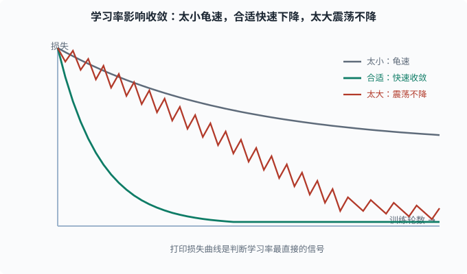

训练技巧：让网络稳定、收敛、不背答案
目标：把"训练稳定 + 防止过拟合"的工程手段讲透。读完这一页，你能讲清学习率、权重初始化、BatchNorm、dropout、早停、数据增强各自在对抗什么问题，以及它们如何协同。
为什么"会反向传播"还不够
有了前向、反向、损失、优化器，你已经能训练一个网络。但真实训练没那么顺，会撞上三类典型的敌人：
1. 梯度爆炸/消失 → 训练发散或僵死
2. 过拟合 → 背训练集、测试很差
3. 训练不稳定 → 损失剧烈震荡、不收敛
这一页把对抗这三类敌人的成熟手段挨个讲清。每一招都在回答一个问题：它修的是哪个病？
学习率：最重要的一个旋钮
学习率 η 决定每步迈多大。它是全网络唯一的"全局步长"。
学习率的问题形态：
- 太大：参数跨过谷底来回震荡，损失下不去，甚至发散到无穷。
- 太小：收敛极其缓慢，需要海量步数。
- 刚合适：平稳下降，快速收敛。
判断方法：打印损失曲线。常见坏信号：
损失剧烈震荡 → 学习率可能太大
损失缓慢爬坡/抖动 → 可能太大（发散前兆）或计算 bug
损失平坦不动 → 学习率太小，或梯度消失/死了

三条曲线对应同一模型只改学习率的情况：学习率太小，损失下降极慢、长时间停在较高水平；合适的学习率让损失快速且稳定地收敛到很低；学习率太大，损失在较高水平来回震荡甚至发散。所以打印损失曲线是最直接的判断信号。
现代做法很少手调一个常数，而是用调度器（04-05 讲过）：warmup 再 cosine 退火等，让"起步稳 + 后期细"。
权重初始化：起点决定命运
反向传播要一路把梯度乘回浅层。如果初始权重过大或过小，前向输出和反向梯度一开始就可能爆炸或消失。
常见策略：
- Xavier（Glorot）初始化：按每层输入输出维度缩放，保持信号方差稳定，配合 tanh/sigmoid 使用。
- He（Kaiming）初始化：针对 ReLU 设计，进一步补偿 ReLU 砍掉一半信号导致的方差缩小，配合 ReLU 使用。
PyTorch 里 nn.Linear、nn.Conv2d 的默认初始化就是 He 系的，通常你不需要手写。但你该知道："为什么我的网络初始化就炸"很多时候要怪没配好初始化和学习率的匹配。
数据归一化 / 标准化
即使模型很复杂，特征尺度悬殊依然会捣乱：一个特征数值范围 0-1，另一个 0-1e6，那么梯度会被大尺度特征主导。
常见手段：
- Standardization：每个特征减去均值、除以标准差，变成均值 0、标准差 1。
- Min-Max：缩放到 0-1 或 -1-1。
- 亲测一个简单规律：先做特征缩放再做深度模型，几乎总是更好。
这与 03-08 里的特征缩放逻辑一致，深度模型同样受益。
BatchNorm：把每层的分布拉回来
Batch Normalization（批归一化，批 = mini-batch，一次同时喂给网络的那一小批样本） 的思路很妙：不只归一化输入，而是每层激活后都归一化一下，缓解"训练中每层输入的分布随前面层更新而不断漂移"的问题。
给定一个 batch 里某个层的输出 x，BatchNorm：
1. 求 batch 内均值 μ 和方差 σ²
2. 标准化：x_hat = (x - μ)/sqrt(σ² + ε)
3. 用可学习的 γ、β 缩放平移：y = γ*x_hat + β
作用与副作用：
- 加速收敛：每层输入分布更稳定，能用更大学习率。
- 提供轻微正则：batch 内依赖让样本互相影响，有噪声平滑效果。
- 依赖 batch 大小：batch 太小，μ/σ 估计不准，BatchNorm 反而坏事。
在语言模型场景，LayerNorm（对每个样本单独归一化，不依赖 batch）常取代 BatchNorm，这是 05 NLP 与 Transformer 会重点讲的前置。
Dropout：随机"失活"来自带正则
Dropout 是针对过拟合的利器：训练时，以概率 p 随机把一些神经元输出置 0（对它们的下游暂时"隐形"，比例常 0.2-0.5）；预测时不置 0（并用 1-p 缩放回原来量级）。
直觉：
每次都随机砍掉一部分神经元 → 网络不能依赖任何单点
→ 被迫学出冗余、鲁棒的特征，而不是共谋的"特定组合"
可以理解为"每次都在训练一棵不同的子树，最后相当于集成了很多子网络"（和 03-06 集成思想同源）。
注意：只用于训练，测试时要关。PyTorch 里 net.train() / net.eval() 会自动切换。
权重衰减（L2 正则）
在损失里加一个"参数平方和"惩罚：
L_total = L_data + λ·Σθ²
效果是让参数倾向更小、更简单，从而抑制过拟合。它在优化器里体现为 weight_decay（04-05 详解了 AdamW 的解耦）。这是深度学习的"正则化第一默认"。
早停（Early Stopping）
训练时间也影响过拟合：训练越久，越可能背训练集。早停在验证集指标不再改善（或开始变差）时停止训练。
训练损失：一直下降
验证损失：先降后升（过拟合开始）
→ 在验证损失最低点附近停止，保存那时的权重
这是最简单、最省事、收益又大的"免费正则"，强烈建议每个训练循环都配上。
数据增强：让样本更多样的廉价格外数据
对图像：随机旋转、裁剪、翻转、调亮度……对文本：同义词替换、回译（翻译成外语再翻回来）、随机删除……核心思想是用合理的变换造出"语义不变但外观不同"的新样本，扩大有效训练分布。
数据增强间接对抗过拟合：数据"变多、变多样"了，模型更难背、更能学到鲁棒特征。它是视觉领域几乎必配的手段。
梯度裁剪（Gradient Clipping）
当梯度爆炸不可控时，梯度裁剪是最后防线：把梯度的范数截断到一个上限。
若 ||g|| > 阈值C：g ← g * C / ||g||（缩回 C 的大小）
方向不变，只是让单步更新不至于大到发散。RNN（04-08）和 Transformer 的第一层嵌入常要用它，是大模型训练里防爆的标准保险丝。
把这些手段串成一次"稳"训练
一张速查表：
| 敌人 | 手段 |
|---|---|
| 梯度爆炸 | 梯度裁剪、合理初始化和学习率 |
| 梯度消失 | 用 ReLU 族激活、He 初始化、BatchNorm/LayerNorm |
| 过拟合 | dropout、权重衰减、早停、数据增强、更多数据 |
| 训练不稳 | warmup、合理学习率、数据/特征缩放 |
| 收敛慢 | 动量/Adam、余弦退火、BatchNorm、适当加大 batch |
注意"调优"是有顺序的：先保证不炸不消失、能收敛，再考虑防过拟合。 顺序反了，你会把精力浪费在"还没学会就想着别背"上。
一个带全套手段的 PyTorch 训练骨架
import torch
import torch.nn.functional as F
model = torch.nn.Sequential(
torch.nn.Linear(20, 64), torch.nn.ReLU(), torch.nn.BatchNorm1d(64),
torch.nn.Dropout(0.3),
torch.nn.Linear(64, 32), torch.nn.ReLU(),
torch.nn.Linear(32, 1),
)
opt = torch.optim.AdamW(model.parameters(), lr=1e-3, weight_decay=1e-4)
def step_lr(epoch):
return 1e-3 * (0.95 ** epoch) # 简单阶梯衰减
sched = torch.optim.lr_scheduler.LambdaLR(opt, lr_lambda=step_lr)
def train_one_pass(X, y, Xv, yv, epochs=200):
best_val = float("inf")
best_state = None
for ep in range(epochs):
model.train()
opt.zero_grad()
out = model(X)
loss = F.mse_loss(out.squeeze(), y)
loss.backward()
torch.nn.utils.clip_grad_norm_(model.parameters(), 5.0) # 梯度裁剪
opt.step(); sched.step()
model.eval()
with torch.no_grad():
val = F.mse_loss(model(Xv).squeeze(), yv).item()
if val < best_val: # 早停
best_val = val
best_state = {k: v.clone() for k, v in model.state_dict().items()}
model.load_state_dict(best_state) # 恢复到验证最好点
return best_val
这一小段里同时出现了 BatchNorm、dropout、weight_decay、梯度裁剪、学习率调度、早停——训练稳定性的重活都在这几行里。
思考题
- 学习率太大和太小的典型症状分别是什么？
- BatchNorm 的"归一化"发生在哪一级？它为什么在 batch 很小时反而有问题？
- Dropout 在训练和测试时的行为分别是什么？为什么这样设计？
- 梯度裁剪修改了什么、不修改什么？它专门对抗哪类问题？
- 早停的依据是"训练损失"还是"验证损失"？为什么？
参考答案
- 太大：损失剧烈震荡、不收敛甚至发散到无穷。太小：损失下降极慢、像"原地踏步"，需要海量步数才推进一点。
- 发生在每一层的激活之后（对 batch 内该层输出求均值方差再归一化）。它依赖 batch 统计量估计 μ/σ，batch 太小时估计噪声大，归一化反而引入不稳定，甚至坏事（所以大 batch 或不依赖 batch 的 LayerNorm 适用于此类场景）。
- 训练时以概率 p 随机置零部分神经元并参与梯度计算（强迫网络学鲁棒特征）；测试时全部保留，并把权重按
1-p缩放以匹配训练时被随机砍掉造成的期望输出。前者提供正则，后者保证预测稳定。 - 梯度裁剪把梯度范数截断到上限（超限时整体等比收缩），保持方向不变、只改长度。它专门对抗梯度爆炸，防止单步更新过大导致发散，是 RNN 与大模型训练的标准"保险丝"。
- 依据是验证损失。训练损失几乎总在下降（在训练集上越来越拟合），不代表泛化；而验证损失先降后升，它变差才是过拟合开始，早停就在验证最佳点停。
下一步
- 想把"网格结构数据"学到更好 → 04-07 CNN。
- 想处理序列数据 → 04-08 RNN/LSTM。
- 想复习过拟合与偏差-方差的原理 → 03-04 偏差-方差与正则化。